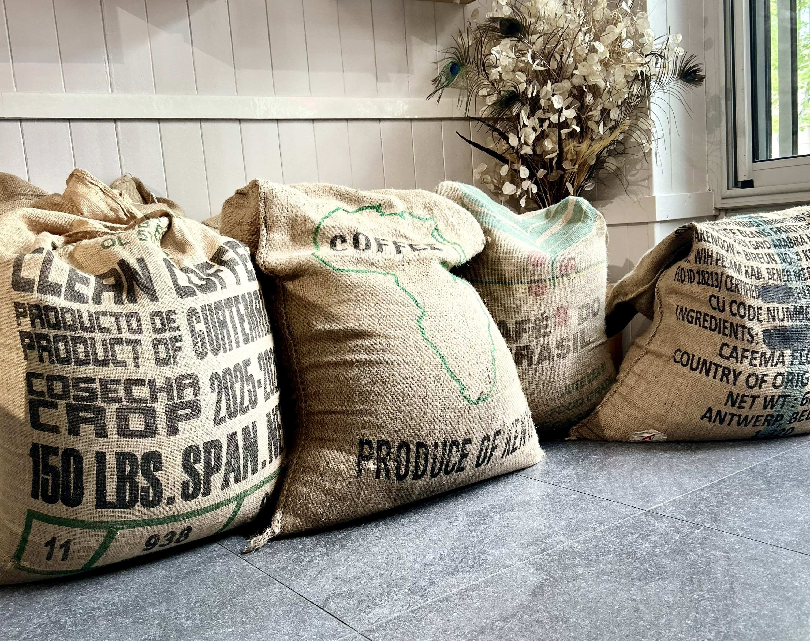
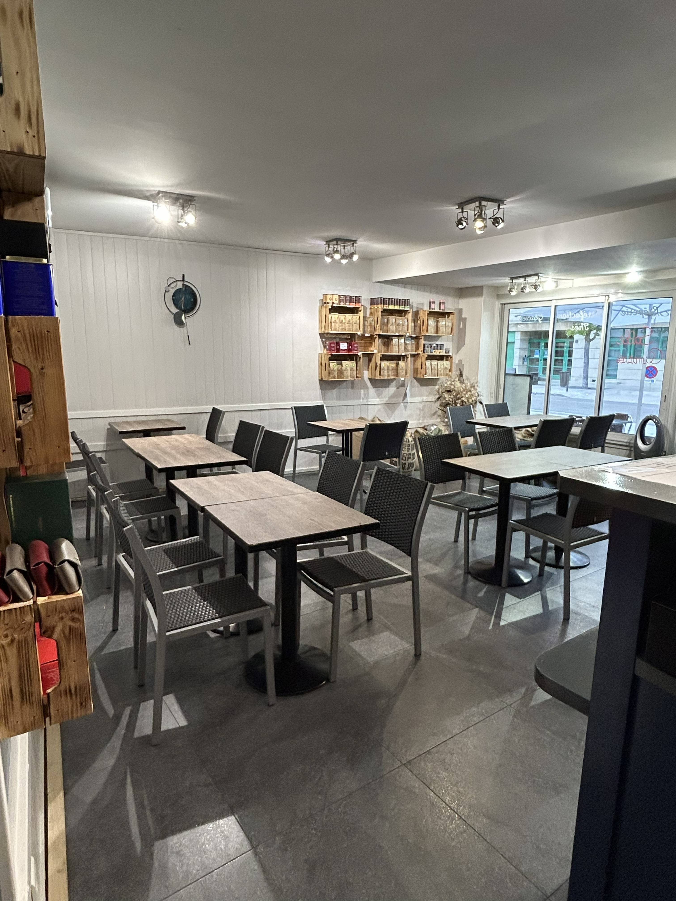
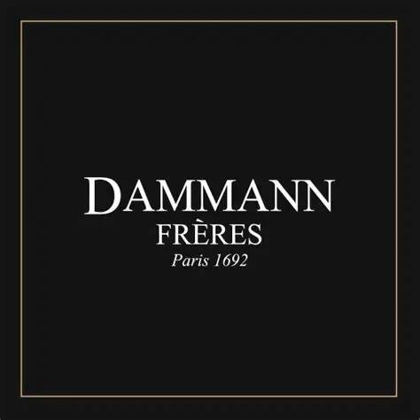
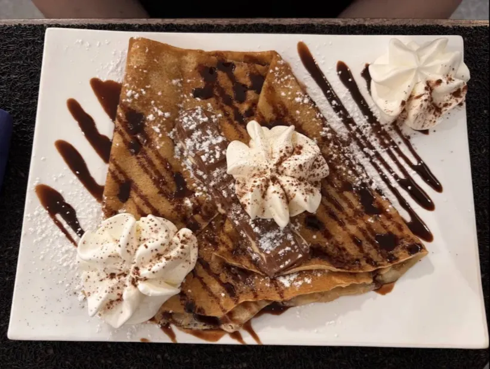

Cafés d'exception
Des cafés choisis avec soin pour révéler une tasse ronde, douce et élégante.
Brasserie · Torréfacteur
Bienvenue aux Douces Heures, un lieu où chaque tasse raconte une histoire.
Notre passion commence bien avant le café servi en tasse. Nous sélectionnons des cafés verts issus des plus grandes origines du monde, que nous torréfions sur place avec exigence et savoir-faire afin de révéler toute la richesse de leurs arômes.
Autour de ce café d’exception, nous vous accueillons du lundi au samedi, de 7h30 à 18h30, dans une ambiance chaleureuse et conviviale.

Notre histoire
Petit-déjeuner, plats du jour, galettes, tartines, salades, crêpes gourmandes et une belle sélection de thés Dammann Frères composent une carte pensée pour tous les moments de la journée.
Profitez de notre terrasse aux beaux jours, de notre salle principale ou de notre espace à l’étage, pouvant accueillir réunions ou événements privés, dans un lieu climatié.
Les plus beaux cafés du monde, torréfiés sur place, une cuisine généreuse et le plaisir d’être ensemble.
L'esprit de la maison
Une cuisine généreuse et le plaisir d'être ensemble guident chaque service.

Des cafés choisis avec soin pour révéler une tasse ronde, douce et élégante.

Des infusions délicates et parfumées pour prendre le temps avec finesse.

Crêpes, douceurs et plats du jour pour accompagner chaque pause avec générosité.
Nos contacts
06 34 53 02 97
03 29 45 41 98